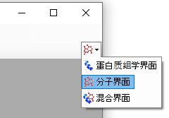

Skyline 靶向质谱环境能直观呈现导入 Skyline 文档的原始质谱仪数据信息。Skyline 最初系为蛋白质组学应用而开发，其应用范畴现已延伸到普遍分子领域。您可以参阅多种教程，这些教程可帮助您将 Skyline 用于各种各样的分析（SRM、PRM、MS1 筛选、DIA 等）。本教程重点介绍对靶向非蛋白质组分子使用 Skyline 的差异。
在本教程中，您将针对一组甲硫氨酸代谢途径化合物建立 SRM 分析。
Skyline 旨在提供一个不区分质谱仪供应商且可用于靶向定量质谱研究的平台。该平台可以导入在不同仪器供应商的质谱仪上采集的原始数据， 例如 Agilent、Bruker、SCIEX、Shimadzu、Thermo-Scientific 和 Waters。通过导入不同仪器平台的数据，可极大地促进可重现方法的传播、实验室间的技能转移、不同仪器之间的比较以及大型多站点研究。这种方法在蛋白质组学领域已使用多年，所以在将 Skyline 用于普遍的目标小分子时同样奏效。
要开始本教程，请下载下列 ZIP 文件：
https://skyline.ms/tutorials/SmallMolecule_3_6.zip
将文件解压到您电脑上的某个文件夹，比如：
C:\Users\bspratt\Documents
该操作将创建一个新文件夹：
C:\Users\bspratt\Documents\SmallMolecule
其中将包含本教程所需的所有文件。
如果您在开始学习本教程之前就一直在用 Skyline，最好将 Skyline 恢复为默认设置。要恢复默认设置：

该 Skyline 实例中的文档设置现已重置为默认值。
由于本教程涵盖小分子主题，您可以执行以下操作来选择分子界面：

Skyline 将在分子模式下运行，Skyline 窗口右上角 随之显示分子图标 。原始蛋白质组学菜单和控件现已隐藏，便于您专心从事小分子分析。
。原始蛋白质组学菜单和控件现已隐藏，便于您专心从事小分子分析。
将分子离子对列表导入 Skyline 文档的捷径是从一个空白文档开始，然后使用编辑 > 插入 > 离子对列表菜单项。
Skyline 至少需要了解每个母离子和子离子的电荷数以及离子的分子式或质荷比。如果离子对列表中没有任何子离子信息，则视之为母离子目标列表。与肽段一样，Skyline认为具有不同子离子信息的重复母离子信息表示单个母离子的多个离子对。
在蛋白质组学应用中，Skyline 可以有把握地假定离子化通过质子化完成。因此，只需其序列和电荷数便足以描述带电荷的肽段。但普通分子可以通过多种方式（钠增加、氢损等）实现离子化。在 Skyline 中，可以使用 http://fiehnlab.ucdavis.edu/staff/kind/Metabolomics/MS-Adduct-Calculator/ 中介绍的加合物样式描述指定这样的离子化模式，例如“[M+Na]”、“[M-2H]”、“[2M+ACN+H]”等。
加合物描述也可用于指示同位素标记的分子。例如，加合物“[M3Cl374H2-Na]”表示该分子有三个由 37Cl 取代的 Cl 原子，四个由氘取代的 H 原子，并且该分子由于 Na 损失而离子化。
对于分子式未知的分子，可以通过加合物显示质量变化。例如，“[M(-1.23)+H]”表示该分子的质量比未改变的形式小 1.23 AMU，并且该分子通过获取氢而实现离子化。
对于离子化方式未知的分子，加合物可仅指示电荷。例如，“[M+3]”表示电荷数为三。质荷比值为分子质量的 1/3。尽管可以同时使用母离子和子离子的质荷比值完整描述离子对列表，但如果没有化学式，Skyline 就无法提供同位素分布。因此，最好提供中性分子和加合物描述的化学式。
要开始创建第一个以非蛋白质组分子为目标的 Skyline 文档，请执行以下操作：
您会看到以下值：
| Molecule List Name | Precursor Name | Precursor Formula | Precursor Adduct | Precursor Charge | Precursor RT | Precursor CE | Product m/z | Product Charge | Label |
| Amino Acid | Methionine | C5H11NO2S | [M+H] | 1 | 2.5 | 15 | 104.07 | 1 | |
| Amino Acid | Methionine | C5H8H'3NO2S | [M+H] | 1 | 2.5 | 15 | 107.09 | 1 | heavy |
| Amino Acid | Isoleucine | C6H13NO2 | [M+H] | 1 | 2.9 | 15 | 86.096 | 1 | |
| Amino Acid | Leucine | C6H13NO2 | [M+H] | 1 | 3 | 15 | 86.096 | 1 | |
| Amino Acid | Leucine | C6H10H'3NO2 | [M+H] | 1 | 3 | 15 | 89.1 | 1 | heavy |
| Amino Acid | Phenylalanine | C9H11NO2 | [M+H] | 1 | 3.1 | 15 | 120.08 | 1 | |
| Amino Acid | Phenylalanine | C9H11NO2 | [M6C13+H] | 1 | 3.1 | 15 | 126.11 | 1 | heavy |
| Amino Acid | Arginine | C6H14N4O2 | [M+H] | 1 | 2.01 | 15 | 116.07 | 1 | |
| Amino Acid | Arginine | C1C'5H14N4O2 | [M+H] | 1 | 2.01 | 15 | 121.11 | 1 | heavy |
| Amino Acid | Ornithine | C5H12N2O2 | [M+H] | 1 | 0.85 | 15 | 70.07 | 1 | |
| Amino Acid | Ornithine | C5H12N2O2 | [M+H] | 1 | 0.85 | 15 | 116.07 | 1 | |
| Amino Acid | Ornithine | C5H10H'2N2O2 | [M+H] | 1 | 0.85 | 15 | 72.07 | 1 | heavy |
| Amino Acid | Ornithine | C5H10H'2N2O2 | [M+H] | 1 | 0.85 | 15 | 118.07 | 1 | heavy |
| Organic Acid | creatine | C4H9N3O2 | [M+H] | 1 | 1.1 | 15 | 90.06 | 1 | |
| Organic Acid | creatine | C4H6H'3N3O2 | [M+H] | 1 | 1.1 | 15 | 93.06 | 1 | heavy |
| 5'-methylthioadenosine | MTA | C11H15N5O3S | [M+H] | 1 | 3.4 | 15 | 136.1 | 1 | |
| 5'-methylthioadenosine | MTA | C11H12H'3N5O3S | [M+H] | 1 | 3.4 | 15 | 136.1 | 1 | heavy |
| S-adenosyl methionine | SAM | C15H22N6O5S | [M+H] | 1 | 2.9 | 15 | 250.11 | 1 | |
| S-Adenosyl homocysteine | SAH | C14H20N6O5S | [M+H] | 1 | 2.9 | 15 | 136.08 | 1 | |
| Polyamine | Spermidine | C7H19N3[M+H] | 1 | 3.3 | 15 | 129.15 | 1 | ||
| Polyamine | Spermine | C10H26N4 | [M+H] | 1 | 3.5 | 15 | 112.112 | 1 |
Skyline 将显示插入离子对列表表单，如下所示：

Skyline 将显示导入离子对列表：标识列表单：

请注意，每一列都有一个下拉控件，用于指定列的类型。在本例中，Skyline 成功确认了所有必要的列。
本例中有一些成对的轻/重同位素标记，例如 Methionine 和 d3-Methionine。在离子对列表中，它们描述为 C5H11NO2S [M+H] 和 C5H8H'3NO2S [M+H]，但也可以使用加合物描述的方式描述为 C5H11NO2S [M+H] 和 C5H11NO2S [M3H2+H]。您可以在轻/重 Phenylalanine 对中看到一个这样的例子：虽然分子式相同，但重加合物描述指定了 6 个碳原子由 C13 取代。注意，加合物列供选填：例如在 Spermidine 的例子中，加合物可以作为离子分子式的一部分提供。还要注意，Precursor Charge 列其实并无存在的必要：从加合物描述中就可以推断出电荷数。标签列也非必需列：从母离子的离子公式和/或加合物可以推断出来重标。
| 请注意：您也可以使用文件 > 导入 > 离子对列表菜单项来直接导入文件，无需打开文件并复制和粘贴其内容。 |
现在 Skyline 窗口将显示如下：

此时可以导出原生仪器方法、母离子分离列表（用于 PRM）或离子对列表（用于 SRM）。有关如何执行此步的更多详细信息，请参见靶向方法编辑、现有实验与定量实验或靶向 MS/MS (PRM) 教程。
在本教程中，您只需导入在 Waters Xevo TQS 仪器上使用 Skyline 导出的 MassLynx 仪器方法获取的原始数据。若现在要导入，请执行下列步骤。
导入结果文件表单应显示如下：

这些文件包含在去除特定氨基酸条件下，从癌细胞系中提取的代谢产物。与对照（所有氨基酸）相比，细胞缺少了氨基酸甲硫氨酸或精氨酸，或二者皆已去除，持续时间为 3 小时。1
文件名与条件：
ID15739_01_WAA263_3976_020415 – 双空白
ID15740_01_WAA263_3976_020415 – 提取空白（含 SIL 标准品）
ID15740_02_WAA263_3976_020415 – 提取空白（含 SIL 标准品）
ID15740_04_WAA263_3976_020415 – 提取空白（含 SIL 标准品）
ID15655_01_WAA263_3976_020415 – 全部 AA 样品 1
ID15656_01_WAA263_3976_020415 – 全部 AA 样品 2
ID15657_01_WAA263_3976_020415 – 全部 AA 样品 3
ID15658_01_WAA263_3976_020415 – Minus Met 样品 1
ID15659_01_WAA263_3976_020415 – Minus Met 样品 2
ID15660_01_WAA263_3976_020415 – Minus Met 样品 3
ID15661_01_WAA263_3976_020415 – Minus Arg 样品 1
ID15662_01_WAA263_3976_020415 – Minus Arg 样品 2
ID15663_01_WAA263_3976_020415 – Minus Arg 样品 3
ID15664_01_WAA263_3976_020415 – Minus Arg, Minus Met 样品 1
ID15665_01_WAA263_3976_020415 – Minus Arg, Minus Met 样品 2
ID15666_01_WAA263_3976_020415 – Minus Arg, Minus Met 样品 3
ID15741_01_WAA263_3976_020415 – 储集的 QC 样品 1
ID15741_02_WAA263_3976_020415 – 储集的 QC 样品 2
这些文件应在短短数秒内导入，之后 Skyline 窗口将显示如下：

要利用 Skyline 摘要图查看各个目标，请执行以下操作：
此时 Skyline 窗口将显示如下：

在本教程中，您了解了如何创建以分子为目标的 Skyline 文档，这些小分子被它们的母离子分子式、加合物以及子离子质荷比值所标识。您导入了由代谢组学研究人员收集的多重重复测定数据集，了解了最初为靶向蛋白质组学应用而创建的 Skyline 功能中，有多少现成的功能可以应用于非蛋白质组分子数据。
1. Tang, X. et al. Comprehensive Profiling of Amino Acid Response Uncovers Unique Methionine-Deprived Response Dependent on Intact Creatine Biosynthesis. PLoS Genet 11, e1005158 (2015).